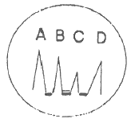
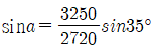
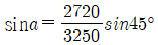
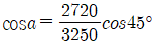
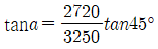
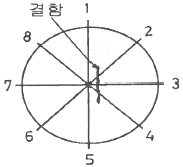

초음파비파괴검사기사 (2021-08-14 기출문제)
1과목: 비파괴검사 개론
1. 방사선투과검사의 신뢰도를 높이기 위한 방법으로 관계가 적은 것은?
- 교육 훈련을 통한 검사자의 기량 향상
- 검사에 적합한 규격의 선정과 적용
- 방사선 안전관리를 통한 효율적인 작업관리
- 시험체에 적합한 검사방법의 선정
(정답률: 알수없음)

2. 와류탐상검사에서 전류 흐름에 대한 코일의 총 저항을 무엇이라 하는가?
- 인덕턴스
- 이랙턴스
- 임피던스
- 리프트오프
(정답률: 알수없음)
3. 다음 중 비파괴시험적인 요소를 포함하고 있는 것은?
- 경도시험
- 굽힘시험
- 충격시험
- 인장시험
(정답률: 알수없음)
4. 오스테나이트계 스테인리스강 용접부의 주상정 내에서의 초음파특성에 대한 설명 중 옳은 것은?
- 주상정 성장방향과 종파의 진행방향에 따라 종파 음속이 변한다.
- 주성정 성장방향과 종파의 진행방향에 관계없이 항상 횡파음속은 일정하다.
- 주상정 성장방향에 대해 45°로 입사하는 종파의 음속이 가장 느리다.
- 주상정 성장방향에 대해 45°로 입사하는 종파의 감쇠가 가장 크다.
(정답률: 알수없음)
5. 다음은 자분탐상검사의 특징을 설명한 것으로 틀린 것은?
- 결함으로부터의 누설자속은 없으므로 자분을 균일하게 적용하면 결함부분에 자분이 흡착된다.
- 자속은 가능한 한 결함면에 수직이 되어야 한다.
- 균열과 같은 결함은 검출할 수 있다.
- 결함이 표면으로부터 깊은 곳에 있으면 자속이 누설되기 어려워 결함을 발견할 수 없다.
(정답률: 알수없음)
6. 구상흑연주철의 특징이 아닌 것은?
- 흑연의 모양이 구상이다.
- 회주철에 비하여 고탄소, 고규소의 주철이다.
- 일반적으로 유리 시멘타이트가 없는 상태에서 사용된다.
- 기지조직이 시멘타이트로 경도와 내마모성이 아주 우수하다.
(정답률: 알수없음)
7. 은백색을 띠며 비중이 1.74로 실용금속 중 가장 가볍고 HCP 격자구조를 가지는 금속은?
- Cd
- Cu
- Mg
- Zn
(정답률: 알수없음)
8. 다음 중 밀도가 가장 큰 것은?
- Tap density
- Apparent density
- Green density
- Sintered density
(정답률: 알수없음)
9. 다음 경도시험 중 대면각이 136°인 다이아몬드 사각추 누르개를 사용하는 것은?
- 누프 경도시험
- 브리넬 경도시험
- 비커스 경도시험
- 로크웰 경도시험
(정답률: 알수없음)
10. 3원계 금속 상태도에서 3상이 공존할 때의 자유도는 얼마인가? (단, 압력은 일정하다.)
- 0
- 1
- 2
- 3
(정답률: 알수없음)
11. Cd, Zn과 같은 육방정계 금속을 슬립면에 수직으로 압축할 때 나타나는 변형부분은?
- Shear stress
- Kink band
- Twin strain
- Mixed dislocation
(정답률: 알수없음)
12. Pb 베이스에 Sb와 Sn이 첨가된 합금이 주용도는?
- 인쇄용
- 공구용
- 건설구조용
- 화학기기류용
(정답률: 알수없음)
13. 엘렉트론(Elektron) 합금의 주성분은?
- Au
- Mg
- Se
- Sn
(정답률: 알수없음)
14. invar와 같이 36% Ni를 함유하는 합금의 특징은?
- 열팽창계수가 작다.
- 열팽창계수가 크다.
- 내식성이 나쁘다.
- 인성과 취성이 크다.
(정답률: 알수없음)
15. 금속재료 경도시험 방법 중 누르개를 이용한 방법이 아닌 것은?
- 쇼어 경도시험
- 비커스 경도시험
- 로크웰 경도시험
- 브리넬 경도시험
(정답률: 알수없음)
16. 용접 변형 방지법 중 냉각법에 속하지 않는 것은?
- 살수법
- 교호법
- 석면포 사용법
- 수냉 동판 사용법
(정답률: 알수없음)
17. 피복 아크 용접 작업에서 아크 발생을 4분, 아크 정지를 6분 하였다면 용접기 사용률은?
- 20%
- 30%
- 40%
- 60%
(정답률: 알수없음)
18. 용접 결함의 분류 중에서 구조상 결함에 해당하는 것은?
- 변형
- 기공
- 인장 강도의 부족
- 용접부 형상의 부적당
(정답률: 알수없음)
19. 일반적인 서브머지드 아크 용접의 특징으로 옳은 것은?
- 용접부 개선 홈 가공을 하지 않아도 된다.
- 용접 진행 상태를 육안으로 확인할 수 있다.
- 용입이 깊고, 용융속도 및 용착속도가 빠르다.
- 용접선이 짧거나 복잡한 경우 수동에 비하여 능률적이다.
(정답률: 알수없음)
20. 비폭 배합제의 성분 중 아크 안정제에 속하는 것은?
- 산화티탄
- 페로티탄
- 마그네슘
- 알루미나
(정답률: 알수없음)
2과목: 초음파탐상검사 원리
21. 두께 500mm의 단강품을 수직탐촉자를 사용하여 펄스-에코법으로 탐상 시 건전부의 젭회 저면 반사치와 제2회 반사치의 차이가 30dB 이라면 이 단강품의 감쇠정도는? (단, 반사손실은 무시한다.)
- 0.4 dB/m
- 0.2 dB/m
- 0.04 dB/m
- 0.02 dB/m
(정답률: 알수없음)
22. 시험체의 음향 이방성 측정에 있어 횡파의 음속비를 측정하려는 경우 사용되지 않는 기기는?
- 초음파 탐상기
- 초음파 두께측정기
- 초음파 현미경
- 음속 측정 장치
(정답률: 알수없음)
23. 초음파탐상검사에서 에코높이를 이용하는 방법으로 결함의 크기를 측정하는 방법이 아닌 것은?
- 산란파법
- 단부에코법
- 텐덤법
- 투과반사법
(정답률: 알수없음)
24. 강의 종파속도가 5900m/s, 두께가 5mm일 때 공진 주파수는?
- 0.59MHz
- 5.9kHz
- 0.59MHz
- 59kHz
(정답률: 알수없음)
25. 그림은 수침법을 이용한 초음파 탐상시험에서 표시기에 나타난 참상도형이다. CRT상에서 물거리는 어느 부분을 나타내는가? (단, A는 송신펄스, B는 전면반사지시, C는 불연속지시, D는 저면반사지시를 나타낸다.)

- A~B 거리
- B~C 거리
- B~D 거리
- C~D 거리
(정답률: 알수없음)
26. 진동의 특성인 감도(Sensitivity)와 분해능(Resolution)의 관계를 잘 설명한 것은?
- 펄스를 조절하는 펄스폭(Pulse Width)이 크면 감도는 증가하고 분해능은 저하된다.
- 펄스폭을 조절하는 펄스폭이 크면 분해능은 증가하고 감도는 저하된다.
- 펄스폭을 크게 하려면 댐핑재료(Damping Material)를 수정으로 한다.
- 펄스폭을 크게 하려면 댐핑재료를 두껍게 부착하여야 한다.
(정답률: 알수없음)
27. 초음파탐상 시 사용 주파수가 증가할 때 다음 중 틀린 내용은?
- 전파거리의 단축
- 감도의 감소
- 작은 결함 탐지가능
- 잡음 크기의 증가
(정답률: 알수없음)
28. 다음 중 초음파탕상검사에서 분해능에 가장 큰 영향을 미치는 인자는?
- 탐촉자의 재질
- 주파수
- 입사각
- 탐촉자의 초점거리
(정답률: 알수없음)
29. 초음파는 어떤 방법으로 재료에 전달되는가?
- 전자기파
- 저전압 전기장
- 불연속 반사파
- 매질의 진동
(정답률: 알수없음)
30. 거리진폭교정곡선(DAC)용 시험편인 STB-A2와 RB-4를 서로 비교하면 감도차이가 가장 많이 나는 굴절각은?
- 45°
- 60°
- 70°
- 80°
(정답률: 알수없음)
31. 초음파현미경 탐상방법의 원리가 아닌 것은?
- 송신부로부터 전기신호는 음향렌즈로 집속되어 시험체에 조사된다.
- 시험체로부터 반사된 초음파는 거의 동일한 역 경로로 진동자에 도달한다.
- 전기신호로 변환되어 화면의 휘도 변조신호로 이용된다.
- 2회의 초음파의 송수신으로 화면상의 아주 작은 1개의 화소가 메워지게 된다.
(정답률: 알수없음)
32. 초음파탐상검사에서 결함의 위치 측정 시 고려되어야 할 사항이 아닌 것은?
- 결함이 원거리 음장내에 있을 때
- 시험체와 표준시험편의 음속에 차가 있을 때
- 시험체에 음향이방성이 있을 때
- 시험체가 변형되어 있을 때
(정답률: 알수없음)
33. 초음파 에코의 지시진폭 거리가 증가함에 따라 지수 함수적으로 감소하는 영역은?
- 불감대 영역
- 근거리음장 영역
- 원거리음장 영역
- 시험편 모든 영역
(정답률: 알수없음)
34. 쐐기 내의 음속 2720m/sec, 시험재(탄소강)내의 음속 3250m/sec일 때 입사각 a를 구하는 식은? (단, 굴절각은 45°이다.)




(정답률: 알수없음)
35. 다음의 압전재료 중에서 송신효율이 가장 좋은 것은?
- 황산리튬
- 수정
- 세라믹
- 티탄산 바륨
(정답률: 알수없음)
36. 동일한 재료를 동일한 주파수로 검사할 때 일반적으로 횡파가 종파보다 작은 불연속에 감도가 좋은 이유는?
- 횡파는 시험체내에서 쉽게 분산되지 않으므로
- 횡파의 입자진동방향이 불연속에 더 민감하므로
- 횡파의 파장이 종파의 파장보다 더 짧으므로
- 파장이 종파의 파장보다 2개 길기 때문에
(정답률: 알수없음)
37. 초음파탐상시험 시 재질이 서로 다른 금속간의 경계면에서 굴절량을 결정해주는 가장 큰 인자는?
- 감쇠계수
- 주파수
- 팽창계수
- 음향 임피던스
(정답률: 알수없음)
38. 단강품 초음파탐상검사에 대한 설명 중 옳은 것은?
- 근거리음장을 보정하기 위하여 분할형 탐촉자를 사용할 수 있다.
- 결정입이 크기 때문에 높은 주파수를 사용한다.
- 수직탐상과 경사각탐상을 반드시 수행한다.
- 종파보다 횡파를 이용한다.
(정답률: 알수없음)
39. 초음파탐상검사에서 A스캔(주사) 시 불감대 영역이란?
- 근거리 음장 거리
- 빔 분산의 외측 영역
- 초기 표면 펄스의 폭에 가려진 거리
- 원거리 음장과 근거리 음장 영역 사이의 영역
(정답률: 알수없음)
40. 작은 결함의 경우 탐상감도는 주파수와 어떤 관계가 있는가?
- 주파수가 높을수록 탐상감도 커진다.
- 주파수가 높을수록 탐상감도는 작아진다.
- 주파수와 탐상감도는 서로 무관하다.
- 주파수와 탐상감도는 포물선의 관계를 가진다.
(정답률: 알수없음)
3과목: 초음파탐상검사 시험
41. 초음파 탐상장치에서 리젝션(rejection)은 임상에코와 같은 것을 억제시키지만 장치의 어떤 기능을 저하시키도 한다. 여기서 말하는 어떤 기능이란?
- 시간축 직선성
- 증폭 직선성
- 분해능
- 시그널 대 노이즈(S/N) 비
(정답률: 알수없음)
42. STB-A1 시험편에 존재하지 않는 것은?
- 반지름 100mm인 원주면
- 직경 50mm인 구멍
- 직경 1.5mm인 평저공
- 직경 2mm인 평저공
(정답률: 알수없음)
43. 다음 중 수침법의 종류가 아닌 것은?
- 갭(gap)법
- 탠덤탐상법
- 국부수침법
- 전몰수침법
(정답률: 알수없음)
44. 초음파 탐상검사에서 단위시간에 탐상기가 발생하는 펄스의 수를 무엇이라고 하는가?
- 탐상기의 파장
- 탐상기의 펄스반복주파수
- 탐상기의 펄스길이
- 탐상기의 펄스회복시간
(정답률: 알수없음)
45. 다음 결함 중 초음파 탐상검사로 검출하기 가장 어려운 결함은?
- 오버랩
- 루트균열
- 수축공
- 라미네이션
(정답률: 알수없음)
46. 용접부 탐상을 위해 준비해야 할 사항 중 잘못 설명된 것은?
- 용접부 인접 모재면에 스패터 등의 부착물이 있으면 스크레퍼 등으로 제거해야 한다.
- 4MHz 이상의 경사각 탐촉자 사용을 위한 감도조정 시 반드시 글리세린을 접촉 매질로 사용해야 한다.
- 시험감도 조정을 위해 필요 시 표준시험편 또는 대비 시험편을 사용해야 한다.
- 거친 표면은 그라인딩으로 다듬질 한 후 검사하기도 한다.
(정답률: 알수없음)
47. 전자음향 탐촉자(EMAT)에 대한 설명으로 틀린 것은?
- 접촉매질은 주로 고무를 사용한다.
- 자계를 이용하여 초음파를 발생시키는 방법이다.
- 시험체의 온도가 높거나, 표면이 거칠어도 적용할 수 있다.
- 외부진동자의 진동 없이도 시험체내에 초음파를 발생시킬 수 있다.
(정답률: 알수없음)
48. 다음 중 진동자의 두께가 얇아 깨어지기 쉬우므로 직접접촉법보다 주로 수침용 탐상에 사용되는 주파수(MHz)로 가장 적절한 것은?
- 1
- 2
- 5
- 10
(정답률: 알수없음)
49. 다음 중 초음파탐상 관련 설명으로 옳은 것은?
- 경사각 탐촉자의 입사점과 굴절각을 측정할 경우 에코의 높이는 25~45% 정도가 가장 좋다.
- 초음파 탐촉자의 가장 수신 효율이 좋은 재질은 티탄산바륨이다.
- 판재의 경사각 탐상 시 빠뜨리기 쉬운 결함은 표면에 평행인 결함이다.
- 경사진 시험체는 초음파탐상검사를 적용할 수 없다.
(정답률: 알수없음)
50. 다음 중 강의 용접부에 나타나지 않는 결함은?
- 용입부족
- 융합불량
- 슬래그혼입
- 단조균열
(정답률: 알수없음)
51. 초음파탐상 결과의 표시 또는 기록 방법으로 시험체 저면의 부식 등에 의한 두께 감소상태를 corrosion map으로 나타내는 방법은?
- A-Scan법
- B-Scan법
- C-Scan법
- D-Scan법
(정답률: 알수없음)
52. DGS선도에 관한 다음 설명으로 옳은 것은?
- DGS선도에 의해 결함 크기를 평가할 때 감쇠가 큰 경우에는 보정을 필요로 한다.
- DGS선도에 의해 결함 크기를 평가할 때 결함이 경사져 있는 경우 결함 크기를 실제보다 크게 측정하는 것이 된다.
- DGS선도에 의해 결함 크기를 평가할 때 고분해능 탐촉자를 사용하려면 결함의 종류를 알수 있다.
- DGS선도를 이용하여 결함의 종류를 추정할 수 있다.
(정답률: 알수없음)
53. 그림과 같은 결함이 있는 환봉을 수직탐상했을 때, 1~8의 각 위치에서 나타나는 현상을 설명한 것 중 틀린 것은?

- 1과 2의 위치에서는 저면에코감쇠와 결함에코가 거의 얻어지지 않는다.
- 2와 6의 위치에서는 결함에코가 다소 작게 관찰되며, 저면에코감쇠도 확인된다.
- 3과 7의 위치에서는 큰 결함에코가 나타나며, 현저한 저면에코감쇠가 확인된다.
- 4와 8의 위치에서는 결함에코가 다소 작게 관찰되며, 저면에코감쇠도 확인된다.
(정답률: 알수없음)
54. 탐상기의 스크린에 저면반사파의 개수가 지나치게 많으면 결함검출에 어떤 영향을 주는가?
- 저면반사파 신호에 묻혀 결함검출이 곤란하다.
- 여러가지 결함표시가 감쇠된다.
- 영향이 없다.
- 초기펄스가 굴절된다.
(정답률: 알수없음)
55. 탐상장치의 성능 중에서 이 성능이 나쁘면 정확한 에코높이가 얻어지지 않고 결함을 빠뜨리기도 하고 결함을 과소 또는 과대평가하게 되는 것은?
- 증폭직선성
- 시간축직선성
- 근거리분해능
- 방위분해능
(정답률: 알수없음)
56. 초음파탐상시험에서 접촉법으로 사용하는 탐촉자의 분해능은 어느 것에 직접 비례하는가?
- 탐촉자의 직경
- 펄스 반복율
- 주파수
- 진동자의 두께
(정답률: 알수없음)
57. 단강품의 수직탐상검사에서 저면에코가 나타나지 않는 경우에 대한 방법으로 옳은 것은?
- 분할형 탐촉자를 사용한다.
- 곡률 탐촉자를 사용한다.
- 시험 주파수를 더 높게 한다.
- 시험 주파수를 더 낮게 한다.
(정답률: 알수없음)
58. 강(steel)을 수침법으로 검사할 경우 강으로 입사한 초음파는 어떻게 되는가? (단, 탐촉자에는 음향렌즈를 사용하여 퍼짐이 없이 전체가 수직으로 진행한다.)
- 강 중에서 분산한다.
- 초점현상을 나타내며 집속한다.
- 음향렌즈와 상관없이 진행한다.
- 강으로 입사하지 못하고 모두 전반사한다.
(정답률: 알수없음)
59. 시험면과 평행한 평면형상을 가장 알기 쉽게 표시하는 방식은?
- A-scan
- B-scan
- C-scan
- D-scan
(정답률: 알수없음)
60. 결함에코 높이가 비교적 낮고 폭이 좁은 특성이 있으며, 진자주사를 하거나 반대쪽에서 주사를 하여도 거의 일정한 펄스 강도를 나타냈다면 검출된 결함은?
- 균열
- 기공
- 융합불량
- 용입불량
(정답률: 알수없음)
4과목: 초음파탐상검사 규격
61. 보일러 및 압력용기의 재료에 대한 초음파탐상검사(ASME Sec.V Art.5)에 따라 검사절차서를 작성하고자 할 때 절차서에 반드시 포함되어야 할 사항이 아닌 것은?
- 탐촉자 주파수
- 검사체의 두께 및 크기
- 교정에 사용된 시험편
- 검사체의 허용온도 범위
(정답률: 알수없음)
62. 보일러 및 압력용기의 재료에 대한 초음파탐상검사(ASME Sec.V Are.5)에서 볼트용 재료의 교정시험편이 아닌 것은?
- A형 교정시험편
- B형 교정시험편
- C형 교정시험편
- E형 교정시험편
(정답률: 알수없음)
63. 초음파탐상 시험용 표준시험편(KSㅠ 0831)에서 경사각 탐상에 사용하지 않는 표준시험편은?
- STB-A3
- STB-A31
- STB-G
- STB-A7963
(정답률: 알수없음)
64. 초음파탐상검사에서 의한 건축용 구조 강판 및 평강의 등급분류와 허용 기준(KS D 0040) 에서 초음파탐상검사의 적용범위 및 방법이 아닌 것은?
- 수직탐상
- 두께 20mm 이상인 강판
- 두께 13mm 이상이고, 폭 180mm 이상의 평강
- 강 구조 건축물의 주요구조재 가운데 판두께 방향으로 높은 응력이 작용하는 재료
(정답률: 알수없음)
65. 보일러 및 압력용기에 대한 초음파탐상검사(ASME Sex.V Art.4)에서 비 배관의 수직 빔 교정에서 거리 진폭 교정장치로 교정하였을 경우 기본 교정시험편으로부터 응답 신호범위로 옳은 것은?
- 전체 화면 높이의 20%~60%
- 전체 화면 높이의 20%~80%
- 전체 화면 높이의 40%~60%
- 전체 화면 높이의 40%~80%
(정답률: 알수없음)
66. 보일러 및 압력용기에 대한 초음파탐상검사(ASME Sex.V Art.5)에서 거리진폭곡선 교정 후 시험할 때 몇 %를 초과하는 모든 불연전부를 조사하는가?
- 20%
- 30%
- 50%
- 60%
(정답률: 알수없음)
67. 보일러 및 압력용기에 대한 초음파탐상검사(ASME Sex.V Art.4)에서 배관 용접부의 기본 교정시험편의 노치 깊이로 옳은 것은? (단, T는 공칭 단벽 두께이다.)
- 최소 1.6%T에서 최대 2.2%T
- 최소 3%T에서 최대 3%T
- 최소 8%T에서 최대 11%T
- 최소 12%T에서 최대 15%T
(정답률: 알수없음)
68. 초음파탐상검사에 의한 건축용 구조 강판 및 평강의 등급분류와 허용 기준(KS D 0040)에 의해 건축용 강판의 초음파탐상 시 등급분류와 판정기준으로 옳은 것은?
- 등급 X일 때 점적률이 20%이하
- 등급 Y일 때 점적률이 10%이하, 국부점적률이 15%이하
- 등급 X일 때 점적률이 15%이하
- 등급 Y일 때 점적률이 7%이하, 국부점적률이 20%이하
(정답률: 알수없음)
69. 페라이트계 강 용접부에 대한 초음파탐상검사(KS B 0896)에서 경사각 탐상 시 평가의 대상으로 하는 흠집은?
- M 검출레벨의 경우 최대 에코높이가 30%를 초과하는 흠집
- M 검출레벨의 경우 최대 에코높이가 M선을 초과하는 흠집
- L 검출레벨의 경우 최대 에코높이가 M선을 초과하는 경우
- 최대 에코높이가 40%를 초과하는 경우
(정답률: 알수없음)
70. 초음파참상검사에 의한 건축용 구조 강판 및 평강의 등급분류와 허용 기준(KS D 0040)에서 압연 방향으로 평행하게 주사할 경우 2진동자 수직탐촉자에 의한 결함의 분류 표시 기호 중 “X"의 의미는?
- 홈 에코의 높이가 DL선 이하인 것
- 홈 에코의 높이가 DL선 초과 DM선 이하인 것
- 홈 에코의 높이가 DM선 초과한 것
- 홈 에코의 높이가 DH선 초과한 것
(정답률: 알수없음)
71. 압력용기용 강판의 초음파탐상 검사방법(KS D 0233)에 따라 강판을 수직 탐촉자로 탐상할 때 탐상감도를 조정하기 위하여 STB-N1 25% 시험편을 사용했다면 이 강판의 두께 범위로 옳은 것은?
- 7mm~10mm
- 13mm~20mm
- 25mm~40mm
- 40mm~60mm
(정답률: 알수없음)
72. 보일러 및 압력용기에 대한 표준초음파탐상검사(ASME Sec.V, Art.23 SA-609)에 따라 절차 A 평저공 교정 절차에서 2진동자 탐촉자로 대비시험편을 이용하여 SAC를 작성할 때 기준이 되는 평저공(FBH)의 직경은?
- 2.4mm
- 3.0mm
- 4.4mm
- 6.0mm
(정답률: 알수없음)
73. 알루미늄 판의 맞대기 용접 이음부에 대한 횡파 경사각 빔을 사용한 초음파탐상검사(KS B 0897)에 따른 경사각 탐촉자의 사용조건에 대해 틀린 것은?
- 빔 중심 축의 치우침인 지향각은 1°단위로 측정한다.
- 공칭굴절각은 40°, 45°, 50°, 55°, 60°, 65° 또는 70° 중의 하나이어야 한다.
- 시험주파수는 4.5MHz~5.5MHz로 한다.
- 공칭 굴절각과 탐상 굴절각의 차는 ±5°로 한다.
(정답률: 알수없음)
74. 압력용기 제작기준 규격의 의무적인 부록(ASME Sec. Ⅷ Div.1 App.12)에서 두께가 각각 25mm와 50mm인 평판의 맞대기 용접부를 초음파탐상한 결과, 다음과 같은 지시가 검출되었다. 다음 중 불합격인 결함으로 옳은 것은?
- 기준 레벨(reference level)의 50%에 해당하는 6mm 슬래그
- 기준 레벨(reference level)의 50%에 해당하는 7mm 슬래그
- 기준 레벨(reference level)의 25%에 해당하는 6mm 슬래그
- 기준 레벨(reference level)의 25%에 해당하는 5mm 슬래그
(정답률: 알수없음)
75. 초음파탐상 시험용 표준시험편(KS B 0831)의 G형 표준시험편의 사용목적으로 틀린 것은?
- 탐상감도의 조정
- 수직 탐촉자의 특성 측정
- 시험편의 잔류응력 측정
- 탐상기의 종합 성능 측정
(정답률: 알수없음)
76. 알루미늄 판의 맞대기 용접 이음부에 대한 횡파 경사각 빔을 사용한 초음파탐상검사(KS B 0897)에 따른 시험결과의 분류에서 모재의 두께가 40mm이고, 1류의 판정이 내려진 경우 허용되는 흠의 최대 길이는 얼마 이하인가? (단, 분류는 B종 흠인 경우이다.)
- 10mm
- 20mm
- 30mm
- 40mm
(정답률: 알수없음)
77. 알루미늄 판의 맞대기 용접 이음부에 대한 횡파 경사각 빔을 사용한 초음파탐상검사(KS B 0897)에 사용조건 중 경사각 탐촉자의 공칭 주파수는?
- 5 MHz
- 7 MHz
- 10 MHz
- 20 MHz
(정답률: 알수없음)
78. 페라이트계 강 용접부에 대한 초음파탐상검사(KS B 0896)에서 초음파탐상기에 필요한 기능에 관한 설명으로 틀린 것은?
- 게인 조정기는 1스템 1dB 이하에서, 합계 조정량은 30dB 이상을 가진 것으로 한다.
- 게이트 범위는 10mm~250mm(횡파)의 범위에서 임의로 설정할 수 있어야 한다.
- 경보 레벨은 표시기의 세로축 눈금 위 20%~80%의 범위에서 임의로 설정 할 수 있어야 한다.
- DAC회로를 내장하는 탐상기에는 DAC회로의 스위치, DAC의 기점 및 경사를 조정하는 기능을 가진 것으로 한다.
(정답률: 알수없음)
79. 압력용기용 강판의 초음파탐상 검사방법(KS D 0233)에서 이진동자 수직탐촉자에 의한 주사 시에 탐촉자의 음향 격리면의 방향에 따른 주사의 설명 중 맞는 것은?
- X주사는 음향 격리면을 주압연 방향에 평행하게 배치하고 압연 방향에 직각으로 주사한다.
- X주사는 음향 격리면을 주압연 방향에 직각으로 배치하고 압연 방향에 평행으로 주사한다.
- Y주사는 음향 격리면을 주압연 방향에 평행하게 배치하고 압연 방향에 평행으로 주사한다.
- Y주사는 음향 격리면을 주압연 방향에 평행하게 배치하고 압연 방향에 직각으로 주사한다.
(정답률: 알수없음)
80. 페라이트계 강 용접부에 대한 초음파탐상검사(KS B 0896)로 탐상 시 DAC회로를 사용할 때 에코 높이 구분선의 작성방법으로 옳지 않은 것은?
- A2형계 표준시험편의 ø2×2mm의 표준구멍을 기준으로 사용한다.
- 에코 높이 구분선은 원칙적으로 실제 사용하는 탐촉자를 사용해 작성한다.
- 표준 에코 높이 구분선과 6dB 씩 다른 에코 높이 구분선을 3개 이상 작성한다.
- RB-4를 사용하여 에코 높이 구분선을 작성하는 경우는 RB-4의 표준구멍을 기준으로 사용하기도 한다.
(정답률: 알수없음)